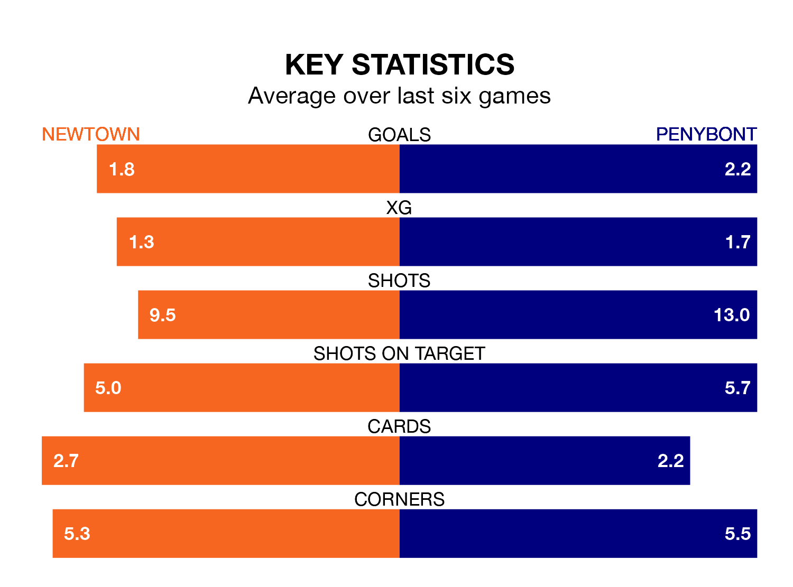

Newtown face a challenge to maintain their high-scoring form at home against a tight Penybont defence on Saturday.
With 49 goals in 32 games, Newtown are the fourth-highest scorers in the Welsh Premier League ahead of the 12.20pm kick-off at G.F. Grigg Latham Park.
They face a Bont side who have scored 46 in 32 matches, but conceded only 37 goals, putting them third among the league's tightest defences – only The New Saints and Bala Town have conceded fewer goals.
Newtown are in reasonable form in the Welsh Premier League, with three wins and two draws from their last six games.
With five wins and a draw over that period, Penybont's form is better – they have taken 16 points from 18, compared to the White Stars's 11.
In the last 10 years, Newtown and Penybont have played each other on 15 occasions. Newtown won five of them, Penybont seven, and they drew three times.
On average, the White Stars scored 1.3 goals and Bont 1.3 in those matches.
Their last meeting was on November 19, when they played out a 1-1 draw.
Bont are fourth in the table after 32 games, of which they have won 14 and drawn seven, earning 49 points.
The hosts are one place behind the away team in fifth, with 13 wins and five draws putting them on 44 points.
Newtown's last match was on April 21, a 3-1 win against Cardiff Met, with Aaron Williams, Callum Roberts and Dominic Smith getting the goals for the White Stars.
Penybont beat Haverfordwest County 1-0 last time out, also on April 21, with Christopher Venables on the scoresheet.
Updated: 12:00 (UTC), 02/05/24